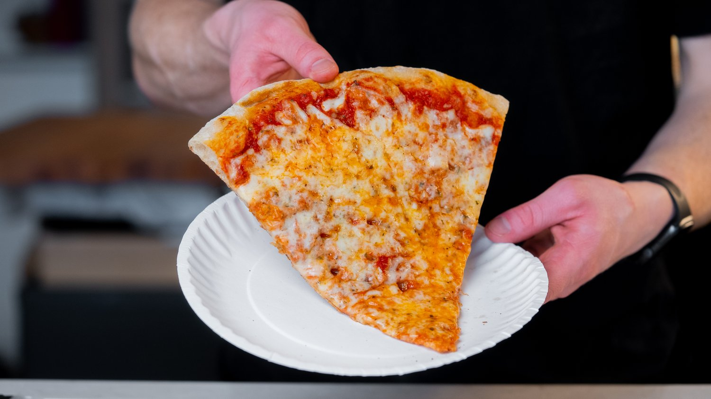

New York-style pizza is a culinary icon renowned for its thin, foldable crust and simple yet satisfying toppings. Originating from the bustling streets of New York City, this pizza features a crisp, yet pliable base with a golden-brown edge, allowing it to be effortlessly folded in half for eating on the go. It's typically topped with a layer of tangy tomato sauce and a generous blanket of gooey mozzarella cheese, often finished with a sprinkle of oregano or red pepper flakes. The result is a harmonious blend of flavors and textures that perfectly captures the essence of NYC-s vibrant, fast-paced food culture.
